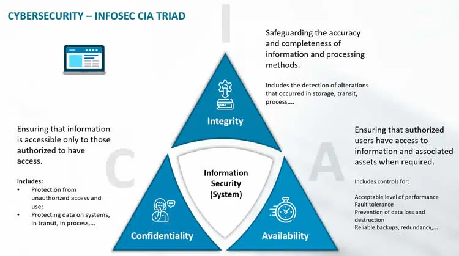

OWASP Top 10 Vulnerabilities 2023
OWASP, or the Open Web Application Security Project, is a nonprofit organization focused on software security. Their projects include a number of open-source software development programs and toolkits, local chapters and conferences, among other things. One of their projects is the maintenance of the OWASP Top 10, a list of the top 10 security risks faced by web applications. As the world becomes increasingly digitized, the security of our online systems and applications becomes a paramount concern. The Open Web Application Security Project (OWASP) has long been at the forefront of identifying and addressing the most critical vulnerabilities that plague our digital landscape. In this reflective piece, I delve into the OWASP Top 10 vulnerabilities for the year 2023, highlighting their impact and exploring the importance of mitigating these risks. More details highlited at the bottom Conclusion, IEEE top 10 also availble on the page separate.
OWASP Top 10 List
Injection:
- As a broad attack category, injection occurs when entrusted code or malware is input in a way that allows attackers to alter key commands.
- These injection attacks rely on coding vulnerabilities that enable unauthorized users to enter input.
- Previously the number one threat, injection dropped to third place during the 2021 update.
Insecure design:
- Encompasses many risks that arise early in the development process.
- Requires a security-first mindset with more threat modeling, secure design patterns, principles, and reference architectures.
Cryptographic failures:
- Refers to leaks or breaches caused by encryption issues or lack thereof.
- Data encryption is essential for cybersecurity, but it requires careful assessment based on the threat model.
Broken access control:
- Occurs when unauthorized parties gain access to protected systems and user accounts.
- Applications with broken access control fail to enforce the rule of least privilege.
Vulnerable and outdated components:
- As application architecture becomes more complex, outdated components pose a higher risk of exploitation by cybercriminals.
- Proactive vetting and updating of third-party components are crucial for security.
Identification and authentication failures:
- Occurs when applications have flaws related to password protection or session identifiers.
- Risks include weak passwords, credential stuffing, and session hijacking.
Software and data integrity failures:
- Integrity violations in code and infrastructure can lead to security flaws impacting frameworks and client-side machines.
- Involves reliance on plugins, libraries, or modules from untrusted sources.
Server-side request forgery (SSRF):
- SSRF occurs when web application flaws allow malicious parties to access or modify resources through server functionality.
- It is similar to cross-site scripting (XSS) and cross-site request forgery (CSRF), but involves a compromised server.
Tips to protect your application and people
Cybersecurity Awareness:
- Educating people (General Public) on cybersecruity from prevention, protection, detection and reaction. This would promote awarness and prevent minors attack. The UK has one called NCSC - The National Cyber Security Center, helping to make the Uunited Kingdom the safetest place to live and work online.
Security scanning:
- Vulnerability scanning provides oversight and reveals key vulnerabilities that need to be addressed.
Encryption:
- Strong encryption is crucial for protecting data. SSL certificates are recommended for encrypted links between clients and servers.
Avoid sensitive activites on Public and Unsecured Connection:
- Man-in-the-middle attacks are very common, avoid doing sensitive transaction like online payment, logging to very personal and work related platforms that could endangered your online activites when using public internet open to everyone.
Log files:
- Security logging is impactful for verifying current security and identifying incidents and policy violations.
Authorization:
- Implement proper authorization to verify access rights and follow the principle of least privilege.
- Deny-by-default approach should be implemented to deny all traffic that is not explicitly permitted.
Authentication:
- Authentication processes verify identity and should enforce strong passwords and use Transport Layer Security (TLS) for login pages.
- Re-authentication should be implemented to prevent session hijacking and cross-site request forgery.
GDPR - General Data Protection Regulation
The General Data Protection Regulation is a Regulation in EU law on data protection and privacy in the EU and the European Economic Area. The GDPR is an important component of EU privacy law and of human rights law, in particular Article 8 of the Charter of Fundamental Rights of the European Union.

OWASP Reflection Peace:
One of the things I learned first doing this, is that all the website I carried out my research from don't have the exact same arrangement regardless of the year, I noticed everything is added in the top 10 but sometimes exact ways of writing it is different. However, I did reference majority from OWASP offcial website. My most interesting finding about OWASP top vulnerabilities is that almost anything I learned from class concerning cybersecurity is in the top 10 of OWASP particular issues dealing with individuals. You have the (AAA) Authentication, authorization, and accounting, it consist of vulnerabilities around the CIA - Confidentiality, integrity and availability, STRIDE framework, GDPR as in the pictures above. Since I learned about the UK NCSC, it was improtant to highlight the impartance of educating the mass on security threats.